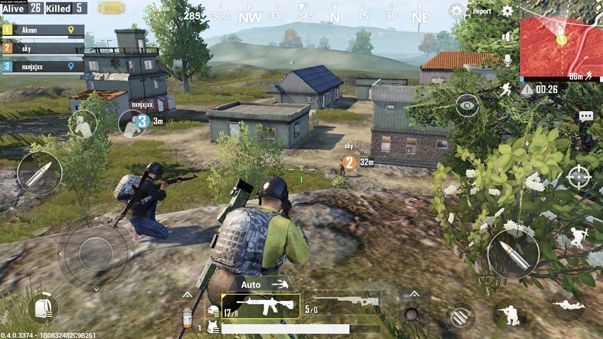
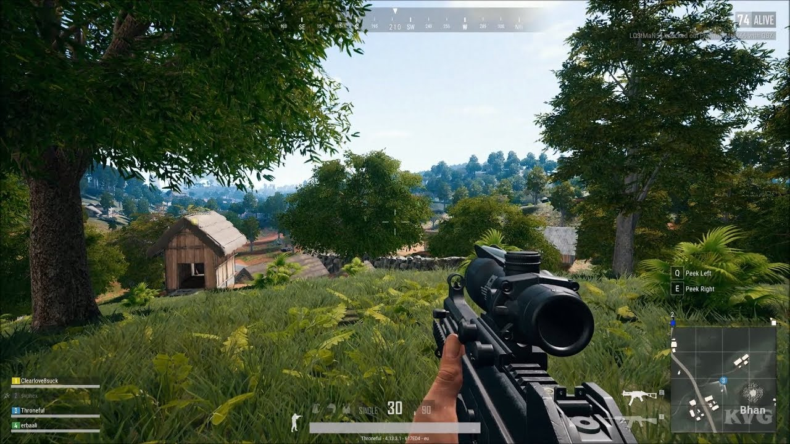
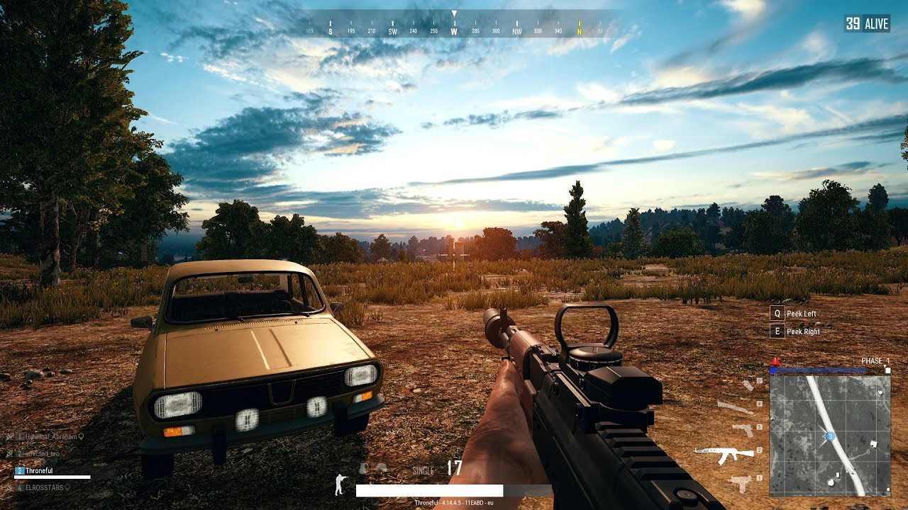

PlayerUnknown's Battlegrounds (viết tắt: PUBG) là một trò chơi điện tử hành động, sinh tồn nhiều người chơi trực tuyến do PUBG Corporation, một chi nhánh của công ty phát triển game Bluehole, có trụ sở chính được đặt tại thành phố Seoul, Hàn Quốc thiết kế, phát triển và phát hành. Trò chơi này dựa trên các bản Mod trước đó đã được Brendan "PlayerUnknown" Greene - nhà thiết kế trò chơi điện tử người Ireland, sáng tạo và phát triển cho các trò chơi khác với cảm hứng bắt nguồn từ một bộ phim Nhật Bản ra mắt vào năm 2000 mang tên Battle Royale và sau đó mở rộng thành một trò chơi độc lập hoàn chỉnh dưới sự chỉ đạo nghệ thuật của chính Greene cùng với nhà sản xuất, phát triển game người Hàn Quốc Chang-han Kim[1] - CEO của PUBG Corporation. Trong trò chơi, sẽ có tối đa một trăm người chơi (bao gồm cả Bot Players - những người chơi ảo được điều khiển tự động bởi trí tuệ nhân tạo) sẽ nhảy dù xuống một hòn đảo lớn. Người chơi sau đó phải nhanh chóng nhặt đồ dùng, vũ khí, phương tiện di chuyển và các trang thiết bị cần thiết để có thể sinh tồn, kết hợp với việc tiêu diệt những người chơi khác và tránh bị người khác giết. Khu vực an toàn sẵn có của bản đồ trò chơi nhỏ dần theo thời gian, đẩy những người chơi còn lại vào những khu vực hẹp hơn để ép buộc họ phải đụng độ với nhau. Người chơi cuối cùng hoặc đội 4 thành viên sống sót cuối cùng sẽ giành được chiến thắng.
Phiên bản truy cập sớm cho hệ điều hành Microsoft Windows trên Steam được phát hành vào tháng 3 năm 2017 và bản đầy đủ được phát hành vào 20 tháng 12 năm 2017. Cũng trong tháng 12, trò chơi đã được Microsoft Studios phát hành cho Xbox One qua chương trình Xbox Game Preview.
Đến đầu năm 2018, phiên bản Steam đã bán được hơn ba mươi triệu bản và có
số người chơi đồng thời cao nhất trên ba triệu, khiến cho PUBG trở thành
trò chơi được chơi nhiều nhất trên Steam, trong khi phiên bản Xbox One đã
bán được hơn bốn triệu bản. Trò chơi cũng được bản địa hóa và được Tencent
Games phát hành ở Trung Quốc, bao gồm hai phiên bản cho thiết bị di động
khác nhau dành riêng cho quốc gia này là PUBG Mobile Timi và PUBG Mobile
Lightspeed and Quantum.

Sau đó, vào tháng 3 năm 2018, Tencent Games và PUBG Corp đã kết hợp để cho
ra mắt chính thức PUBG Mobile Lightspeed and Quantum phiên bản quốc tế
(gọi tắt là PUBG Mobile) với năm loại máy chủ là Bắc Mỹ, Nam Mỹ, Châu Âu,
Châu Á và KR/JP (Hàn Quốc/Nhật Bản).
Tiếp đó, ngày 26 tháng 11 năm 2018, PUBG Mobile phiên bản Việt Nam chính
thức phát hành trên các dòng máy thuộc hệ điều hành iOS bởi VNG dưới sự
hợp tác của VNG, Tencent Games và PUBG Corporation (Bluehole), và đến ngày
27 thì ra bản cho Android. Tuy dành riêng cho thị trường Việt Nam nhưng
bản này vẫn kết nối với máy chủ quốc tế.

PUBG nhận được nhiều nhận xét tích cực từ các nhà phê bình trong cả giai
đoạn early access và cả phiên bản phát hành cuối cùng; những người đánh
giá thấy rằng mặc dù trò chơi vẫn chưa hoàn thành và có một số sai sót về
mặt kỹ thuật, nhưng PUBG đã đưa ra những kiểu chơi trò chơi mới mà người
chơi ở mọi trình độ có thể dễ dàng tiếp cận và có thể muốn chơi lại. Trò
chơi nhận được một số đề cử cho hạng mục "Game của năm" và các giải thưởng
lớn nhỏ khác trong năm 2017, và được xem là trò chơi định hình của thể
loại chiến đấu sinh tồn. Một số trò chơi video khác, sau thành công của
PUBG, đã thêm vào các chế độ Battle Royale, trong khi một số bản sao, chủ
yếu ở Trung Quốc, cũng xuất hiện. Tổng công ty PUBG đã tổ chức một số giải
đấu nhỏ và giới thiệu các công cụ trong trò chơi để giúp phát sóng trực
tiếp trò chơi cho khán giả xem, vì họ muốn trò chơi này trở thành một môn
thể thao điện tử phổ biến, tuy nhiên, trò chơi cũng đã bị cấm ở một số
quốc gia vì bị cho là có hại, bạo lực và gây nghiện cho người chơi trẻ
tuổi.